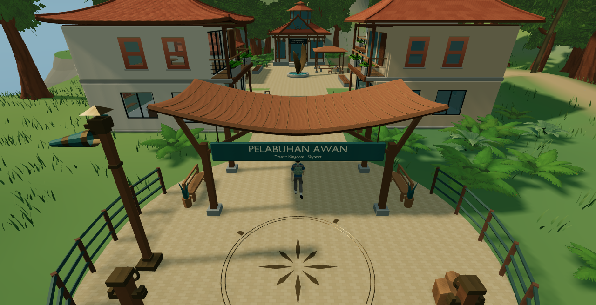

Pelabuhan Awan / C3.1
Three localized refinements. Owner visual approval pending. No public deployment.
Results and rollback · Provenance · Blender derivative · Detail GLB · Play locally
Left: accepted C3. Right: C3.1. Each pair uses an identical camera, lighting, Glass B and 1280 × 656 game buffer, DPR 1. No baseline architecture, terrain or railings are changed.
Ground-level docking edge
Actual explorer

Captured during the uninterrupted controller walk.
Remove town-skyport-polish=r0c3-1 to restore C3. Docking is inactive.